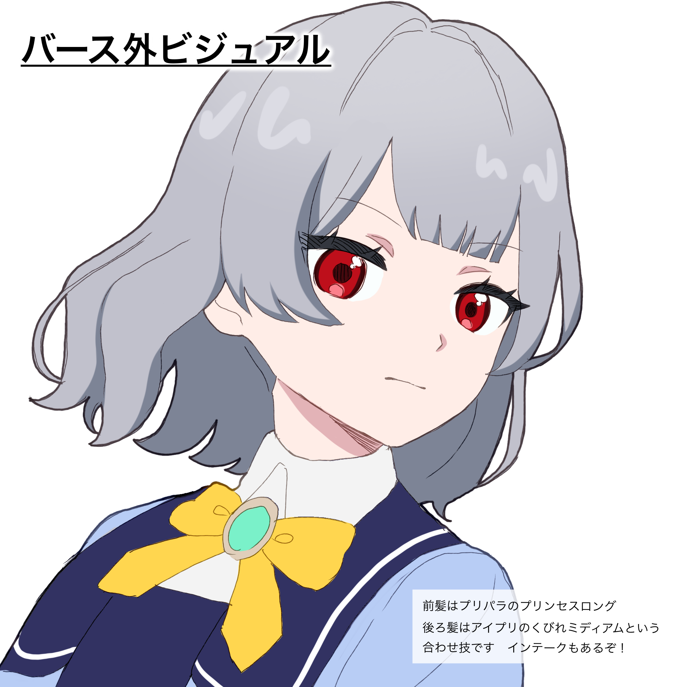
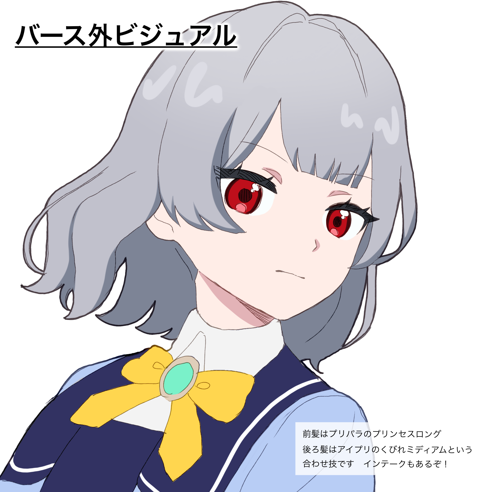

プロフィール
- 名前：耶識（やしき）アルト
- 年齢：14歳
- 身長：150cm
- 誕生日：9月29日
- 血液型：O型
- 出身：北海道
- 特技：歌、アコギ、料理や簡単な家事、速読
- 趣味：音楽鑑賞、カラオケ、夜の散歩、オーディオ類のカタログを見る、レシピ本を読む、マイナーなアイプリ探し(逆張り厄介プリとものため、皆が見ているようなメジャーなアイプリは見ないという面倒な趣味。見ないといいつつ、しっかり動向は把握している)
- アイドルタイプ：クール
- 一人称：わたし
- イメージカラー：赤(次いで鮮やかな青、二色を中心にビビッドでスポーティな色合い担当)
- ひみつ：アイプリを始めたきっかけ
概要
ロシア人の母(スヴェトラーナ・ルキーニシュナ・耶識)と日本人の父（耶識米秋）を持つハーフ。
儚げな見目と後述する性格のせいか友人は少ない。進級記念に親から貰ったブレスでアイプリデビュー。
アイプリとしてはデビューしたてのため、荒削りなパフォーマンスではあるが、芯の通った力強さを持つ声と、あらゆる感情を自在に歌に乗せる高い表現力は、一度見たものの瞳に、脳に、心に存在を刻みつける。
ライブ以外では歌枠や弾き語りを中心に発信し、まれにお料理動画なども出す。(おそらくドッキリやリアクションが求められるものなどに出しても、場をハラハラさせ撮れ高が得られるはずだ)
人物
頑固・ストイック・几帳面・大胆不敵。
クールなアイドルを目指している少女。
責任感が強く、受けた恩は覚えしっかりと返す。せっかちで白黒つけたがりであり、必要だと感じれば即行動に移す。
ただし、甘やかされて育ったせいか良くも悪くも自分に正直で、口を開くとわがまま、思いやりとデリカシーに欠ける幼い言動が飛び出しがち(正論であったり、完全な偏見であることもある)。
また、努力しない人間や自分から行動しない人間を大いに軽蔑している。
普段は無表情気味で淡々と話すため、クールに見られがち(本人もそれを望んでいる)だが、まれに感情が高ぶると、溜め込んでいたものが爆発するように泣いたりパニックになり手がつけられなくなる。収まってもしばらくの間は拗ねており、コミュニケーションを受け付けない。
意外にも家事や料理が得意で、お菓子作りなども好んで行っている様子。
サンタクロースを信じている。
アイプリ・リッカの厄介オタクの気がある。
ひみつ
いつからか好きだった歌は、もともと両親からもよく褒められており、自他ともに得意であるという自負があった。
周りの人間が自らの歌で笑顔になるのが嬉しく、何より自分が歌に込めた楽しさが伝わっているのが嬉しかった。
あるとき、泣いている男の子を励まそうとして歌を歌ったが、なぜだか余計に泣いてしまい、その理由も聞き出せず困惑、幼いながら自分の不甲斐なさ・実力不足に強く憤りを覚える。
以来『泣く子も黙る』言葉通り、誰もが自分の存在をよすがにできるような、強く凛々しいアイプリを志すようになった。
本人にとって実力不足であるということは恥ずべきことのため、誰にもこのエピソードを打ち明けたことはない。
備考
銀髪赤目のビジュアルはプリパラ時代のマイキャラ:やーとにそっくりだが、アイプリの世界において二者の関わりはほぼない。プリズムワールドの使者として生を受けたやーとが普通に人間として生まれていたら？というテーマで生まれたのがアルト。
ひみつの内容が内容なので、１回闇堕ちしたやーとと対になるように、アルトは基本的に闇堕ちしない。恒星は闇堕ちしてはならない。なにかあったら正気を保ったままヒスってもらう。
ギャラリー
 
